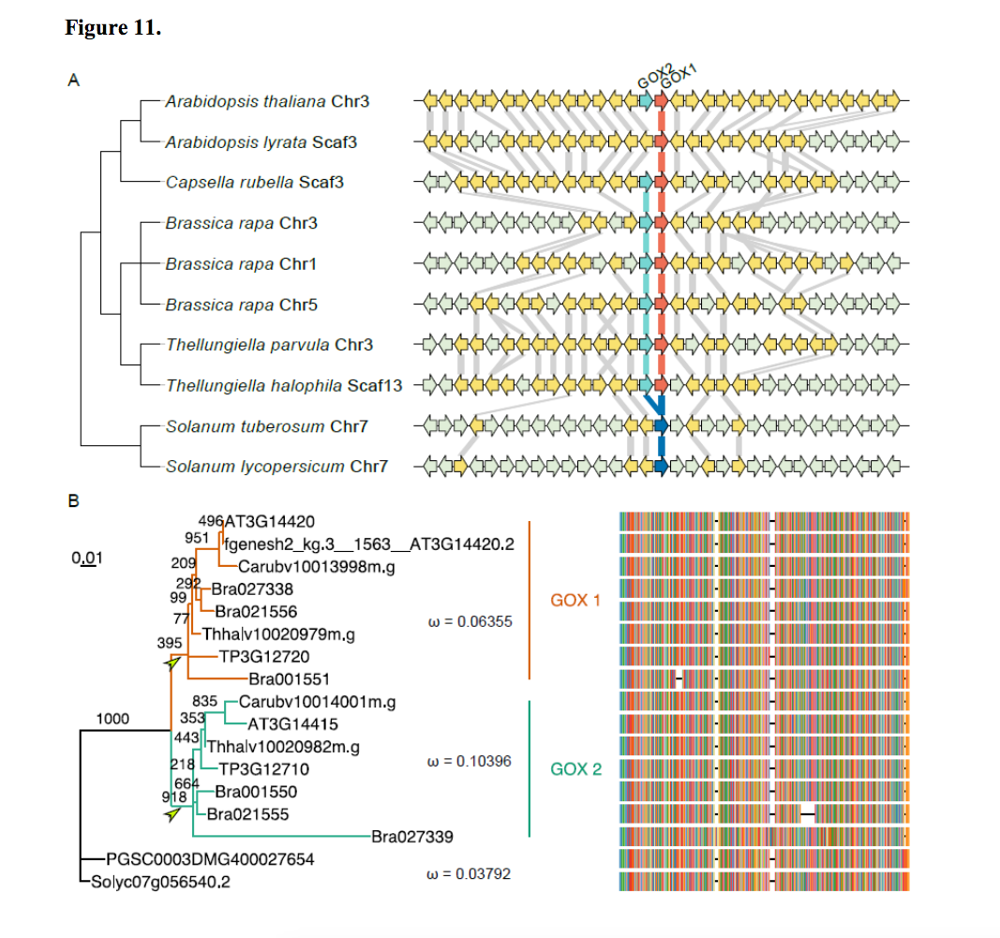
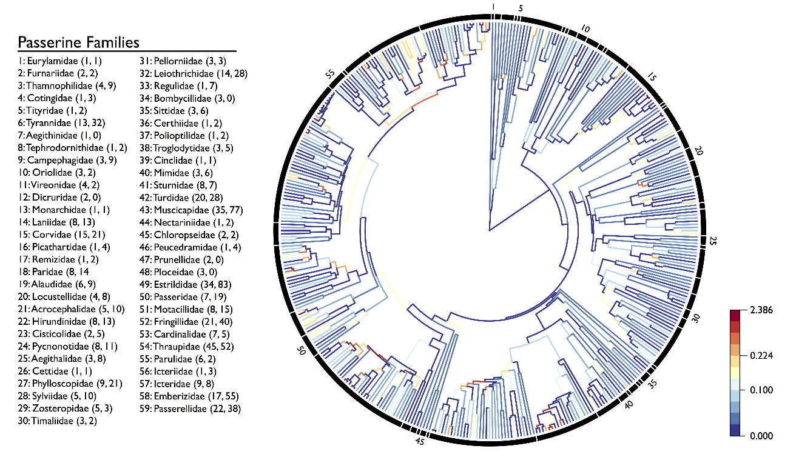
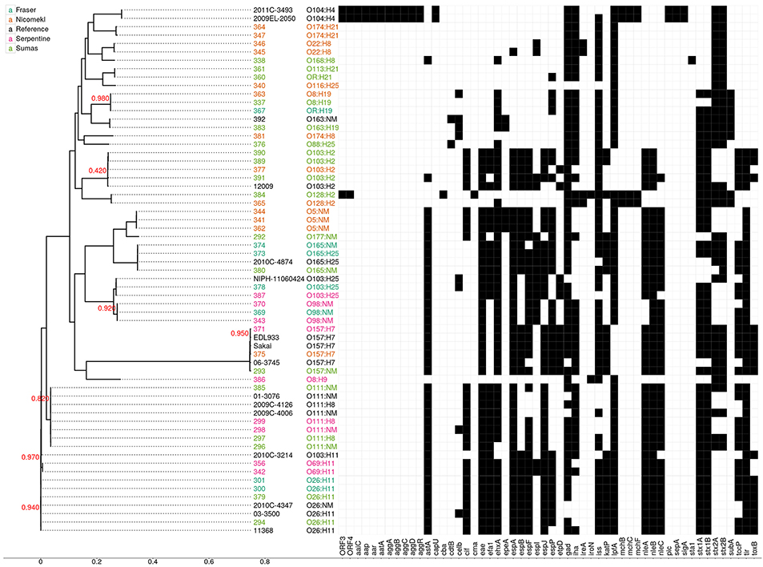
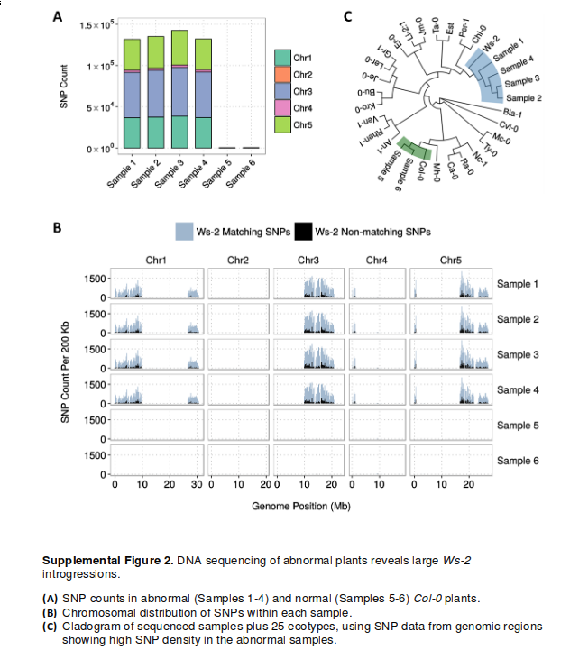
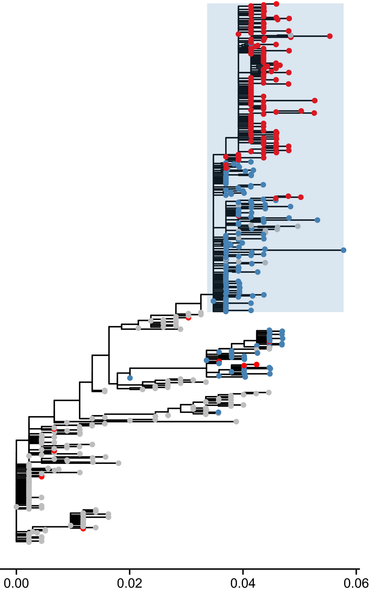
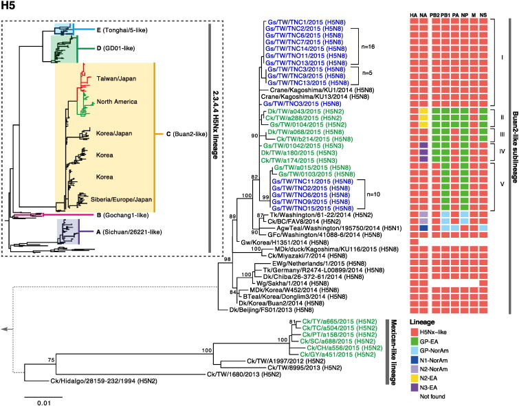
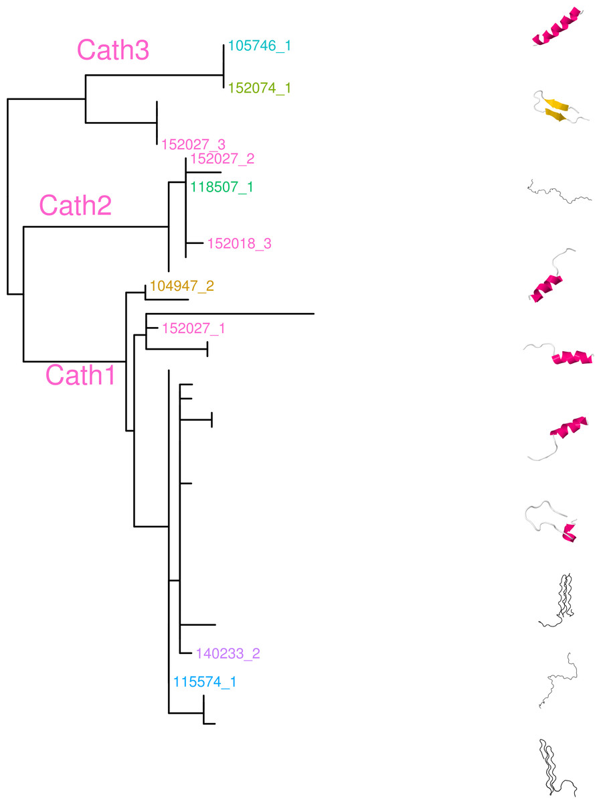

Let us know if you have published using ggtree and your publication will be featured here.
2016
Lack of GLYCOLATE OXIDASE 1, but not GLYCOLATE OXIDASE 2, attenuates the photorespiratory phenotype of CATALASE2-deficient Arabidopsis
Plant Physiology May. 2016

Range overlap drives chromosome inversion fixation in passerine birds
bioRxiv May. 2016 http://dx.doi.org/10.1101/053371

Phenotypic and Genotypic Characteristics of Shiga Toxin-Producing Escherichia coli Isolated from Surface Waters and Sediments in a Canadian Urban-Agricultural Landscape
Front. Cell. Infect. Microbiol. Apr. 2016 http://dx.doi.org/10.3389%2Ffcimb.2016.00036

Ws-2 Introgression in a Proportion of Arabidopsis thaliana Col-0 Stock Seed Produces Specific Phenotypes and Highlights the Importance of Routine Genetic Verification
Plant Cell Mar. 2016 http://dx.doi.org/10.1105/tpc.16.00053

2015
The population genetics of drug resistance evolution in natural populations of viral, bacterial and eukaryotic pathogens
Molecuar Ecology Dec. 2015 http://dx.doi.org/10.1111/mec.13474

Genetic characterization of highly pathogenic H5 influenza viruses from poultry in Taiwan, 2015
Infection, Genetics and Evolution Dec. 2015 http://dx.doi.org/10.1016/j.meegid.2015.12.006

Trans-species polymorphism at antimicrobial innate immunity cathelicidin genes of Atlantic cod and related species
PeerJ May 2015 https://doi.org/10.7717/peerj.976
